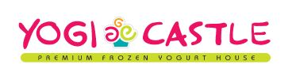

|
Position |
Description |
Location |
Date |
|
|
Community Assistant for American Campus Communities |
Community Assistant/Leasing Agent for The Varsity (an ACC property) student housing apartment in College Park, MD. Sold leases to customers, managed current residents, operated leasing office, and planned community events. Generated $2,100,000
in revenue for American Campus Communities. |
College Park, MD |
September 2017 — May 2018 |

|
Math Tutor for the University of Marlyand Noyce Scholars Program |
Hired as a math tutor through the Noyce Scholars Program at the University of Maryland, College Park. Tutored during the day at Charles Carroll Middle School and during the evening at Northwestern Evening High School. Acted as both a tutor and
mentor for students, sometimes assisting in areas other than math. Led class instruction and held individual sessions for algebra I, algebra II, and geometry. |
College Park, MD |
September 2016 — May 2017 |
|
|
Lab Assistant at E2CR |
Processed, performed lab tests for, and completed analysis of soil samples for clients. |
Baltimore, MD |
November 2015 — January 2016,
May 2016 — July 2016 |
|

|
Cashier at Yogi Castle |
Cashier at Yogi Castle (frozen yogurt shop). Demonstrated customer service both at the cash register and while giving free samples. Maintained the facility by re-stocking and organizing the kitchen, as well as cleaning |
Crofton, MD |
March 2015 — August 2015 |
|
|
Data Analyst Intern for the Instructional Data Division at AACPS |
Worked in the Instructional data division department. Analyzed data to find trends in student testing performances. Used Microsoft Excel and Access to organize data and create pivot tables. Created tutorial videos for the new student database
system, used by teachers across the county. |
Annapolis, MD |
June 2014 — August 2014 |

|
DISA Discover Intern |
Selected as participant for DISA Discover Program internship. Designed and built a SharePoint website for the systems engineering branch of DISA. Learned about systems engineering, as well as the IT and communications services provided by the
United States Department of Defense. |
Fort Meade, MD |
February 2013 — May 2013 |